First Usage¶
NeoDBS is a platform designed for maximal user-experience, with every item and functionality optimized for easy data analysis and natural workflow. Even for unexperienced users in signal processing and analysis.
With this, NeoDBS was developed to allow several workspaces open simultaneously. For that, the user can open multiple windows, each one corresponding to an independent workspace. Just like a browser.
Inside each window (or workspace), all the mentioned data is organized and accessed in a hierarchical order:
Window → File(s)
Tab → Recording(s)
Child Tab → Recording Analysis
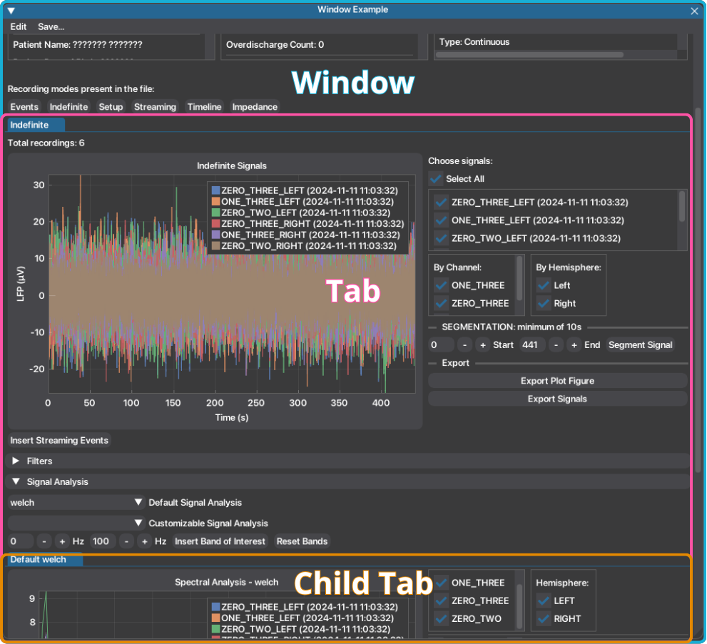
This workflow is explained more in depth below. With this arrangement, the platform facilitates access to data, while ensuring multiple independent and simultaneous analysis pipelines for each recording available.
NeoDBS brings novelty in signal processing platforms by facilitating the user with signal filtering and spectral analysis pipelines with default or customizable parameters. Perfect for both unexperienced users like health professionals, or experienced users such as data analists and researchers.
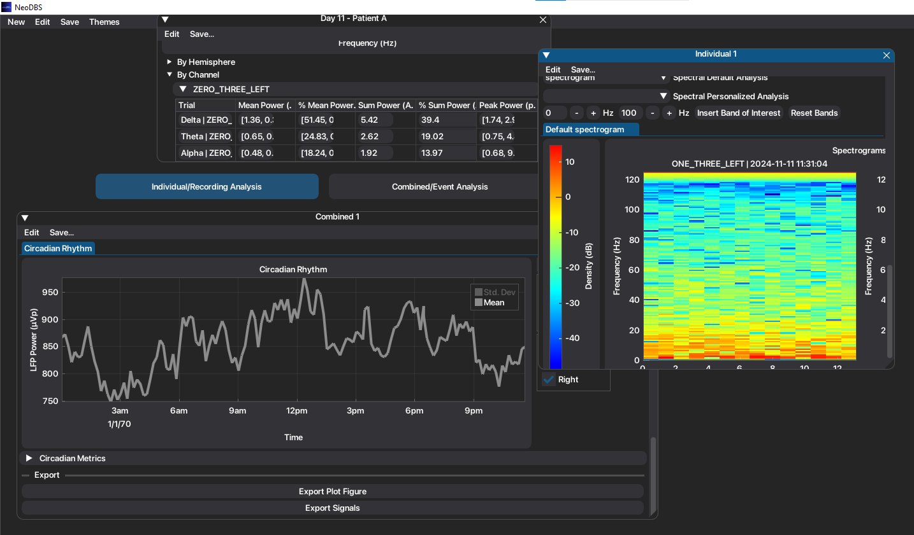
Types of Workspaces¶
As mentioned above, the user has the possibility to work with several workspaces simultaneously. Additionally, NeoDBS offers two different types of workspaces (windows). The Individual Window and the Combined Window. While they share the majority of functionalities, their final goal differs.
Individual Window¶
The Individual window goal is to analyze a single recording session, focusing on the evolution of signals and events inside the same recording session. Therefore, it includes functionalities like:
In-clinic event marking in time-domain signals, and their time-frequency domain methods, according to user input;
Compute merged time-frequency domain methods in same-channel recordings;
These are exclusive to this workspace, in order to enhance computing power and hetereogeneity in workspaces.
Combined Window¶
Unlike the individual window, the Combined window allows the selection of multiple files, focusing therefore on the evolution of the signals across different recording sessions and to analyze the average features of all selected sessions. Additionally, it includes functionalities such as:
In-clinic and Patient event-locked segmentation, automatically epoching recordings according to available events.
These functionalities are further explained in here.
If you're wondering what is the best window to use, here's a summary of the functionalities present in each type of window.
Feature |
Individual Analysis |
Combined Analysis |
|---|---|---|
File Ingestion |
Single file |
Multiple files |
Metadata display |
✓ |
✓ |
Default/Customizable Filtering |
✓ |
✓ |
Default/Customizable Signal Analysis |
✓ |
✓ |
In-Clinic Event Annotation |
✓ |
X |
In-Clinic Event-locked Segmentation |
X |
✓ |
Patient Event-locked Segmentation |
X |
✓ |
Merged Same-Channel Recordings |
✓ |
✓ |
Manual Segmentation |
✓ |
✓ |
Before/After Event Analysis |
X |
✓ |
Types of Recordings¶
NeoDBS is adapted to ingest and analyze files from commercialy available DBS systems with sensing capacities (Medtronic Percept + BrainSense™ system). The system allows to record signals on different recording modes with different purposes and configurations. To know more about these recording modes see here (table 1).
Because of the differences in purpose and configuration across the recording modes, they are accessed and treated independently, in the respective tabs, as mentioned above. Two main types of recordings can be identified: recordings made In-Clinic or At Home.
In-Clinic Data¶
In-Clinic (BrainSense™ Streaming, Indefinite Streaming, Survey and Setup) recordings are acquired in the presence of the physician and are primarily used to configure electrodes, assess electrode integrity, identify artifacts, and analyze the patient's neural activity with or without active stimulation therapy. These recordings are stored in the session file in their raw format as time-domain signals.
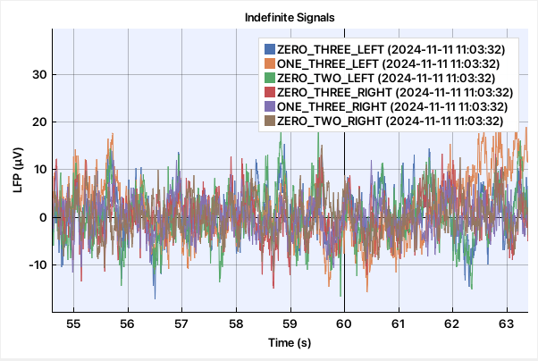
Because the underlying neural signals are preserved, both time-domain and spectral analyses can be applied to extract relevant metrics and features for therapy optimization.
After reviewing how the NeoDBS workflow operates, a simple tutorial is available to guide the analysis of this type of recordings.
At Home Data¶
At-Home (BrainSense™ Timeline and Events), recordings are available when chronic sensing has been enabled by the physician and allow long-term (24/7) monitoring of the patient's neural activity under real-world conditions. These recordings are stored in the session file as processed signals rather than as raw signals.
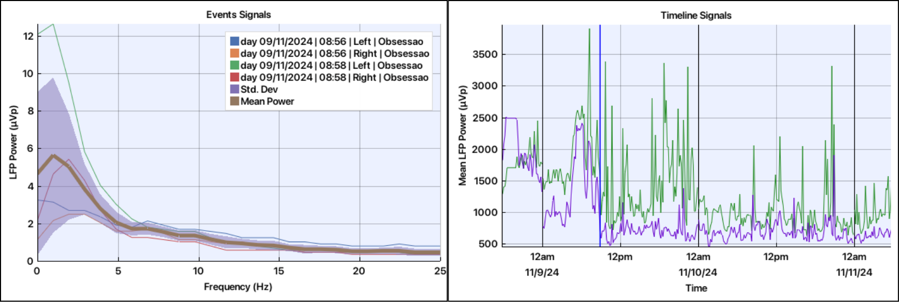
Specifically, at-home recordings are stored either as frequency-domain representations (BrainSense™ Events) or as band-power time-series signals (BrainSense™ Timeline). Because the raw time-domain LFP is not available, primary spectral analyses cannot be performed. Instead, metrics are directly extracted using analysis methods appropriate for frequency-domain data or for ultra-slow temporal modulation of band-limited power.
After reviewing how the NeoDBS workflow operates, a simple tutorial is available to guide the analysis of this type of recording.
Here follows a simple summary of the recording modes, with their associated name in system and NeoDBS:
System Name |
NeoDBS Name |
Usage Context |
Stimulation Status |
Key Features |
|---|---|---|---|---|
BrainSense™ Setup |
Setup |
In-clinic |
On or Off |
Required before other modes (except Survey); Records each segment for 21s each (~90s duration) |
BrainSense™ Survey |
Survey |
In-clinic |
Off |
Records each segment for 21s each (~90s duration) |
BrainSense™ Survey Indefinite Streaming |
Indefinite |
In-clinic |
Off |
Long-duration LFP recording from contact pairs (0–2, 0–3, 1–3), full-bandwidth |
BrainSense™ Streaming |
Streaming |
In-clinic |
On or Off |
Long-duration LFP recording from contact pairs compatible with stimulation |
BrainSense™ Timeline |
Timeline |
At home |
On |
Long-term monitoring from pre-selected bipolar pair; power of 5 Hz band stored every 10 min; contact pairs limited to stimulation- compatible |
BrainSense™ Events |
Events |
At home |
On |
Event-marked recordings, 30 s LFP saved into PSD, time-stamped by patient's manual input |
General Workflow¶
After understanding what workspaces exist, here is a simple workflow for analysis using NeoDBS.
Launch NeoDBS by running NeoDBS.exe and press "Start".
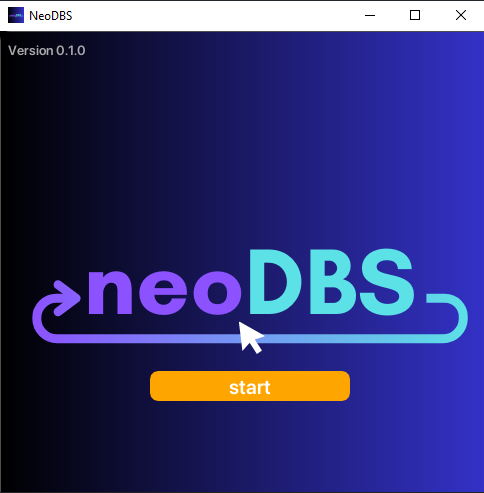
Select type of analysis to be performed: Individual Window or Combined Window. A movable and resizable window will open, a new workspace.
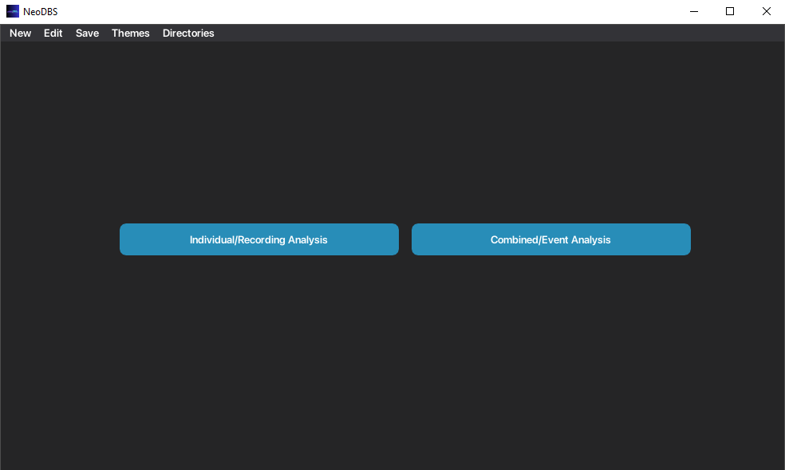
Select the recording session's file(s), in JSON format, to be analyzed. JSON files are highlighted with green letters.
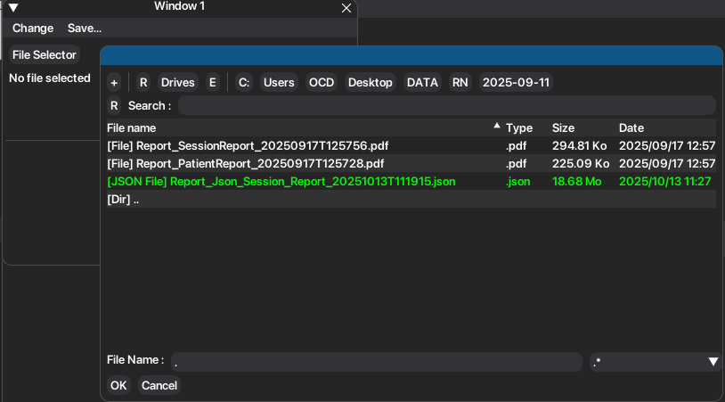
Once you have selected all the desired file(s), press "Open File". You can change the desired files while the "File Selector" button is visible.
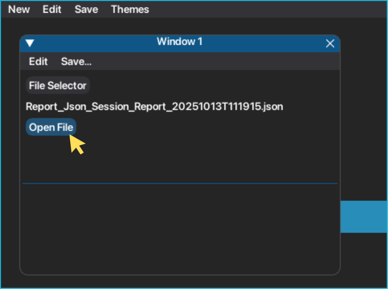
Window will present session, device and stimulation information for each recording session.
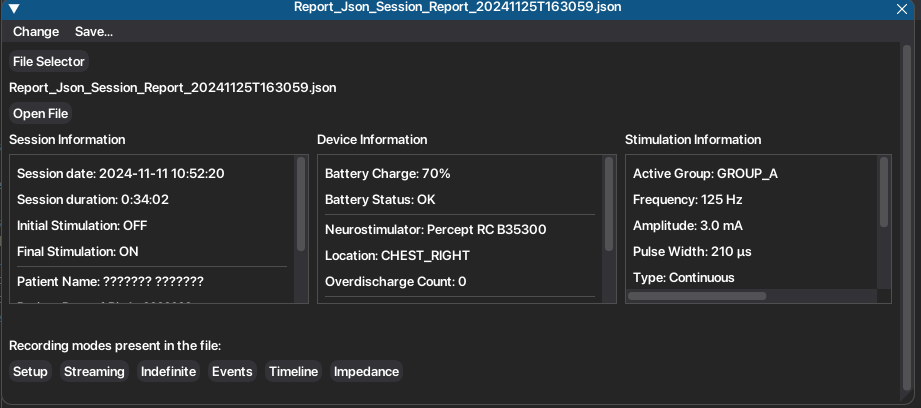
Recordings can be accessed by clicking on the respective recording mode button.
Each recording mode will have its respective tab, with the associated recordings and functionalities.
Warning
Preprocessing and spectral analysis methods will only be applied to the selected signals (visible on the main plot of tab).
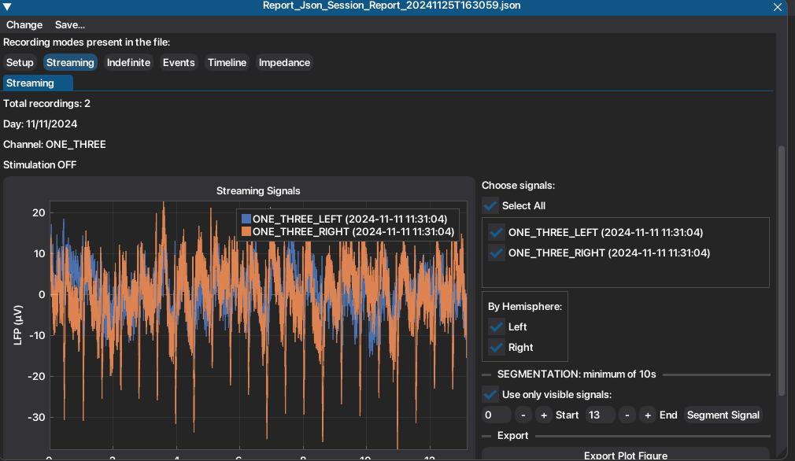
To access Filtering Methods, open the header named "Filters". To access time and spectral analysis methods open the header named Signal Analysis.
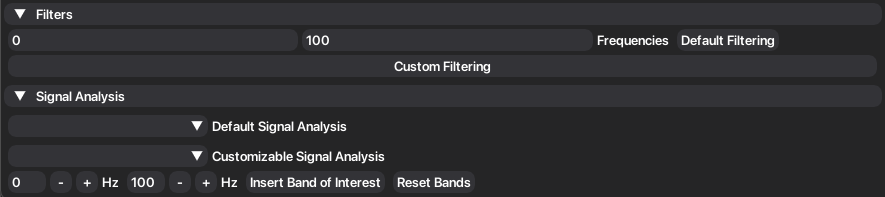
8. Default methods have the parameters predefined for an easier analysis, properly adapted for the recordings configuration. Custom methods allow the parameters to be adjusted according to the user needs. Documentation of the selected method and required parameters will appear to aid the user in selecting the best parameters.
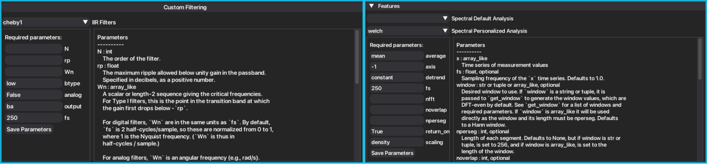
Filtering methods will update the signals in the main plot. Signal Analysis methods create a new plot, under a child tab named after the applied method.
Signals, plots and tables can be easily exported either individually, per window (workspace) or all windows at once.
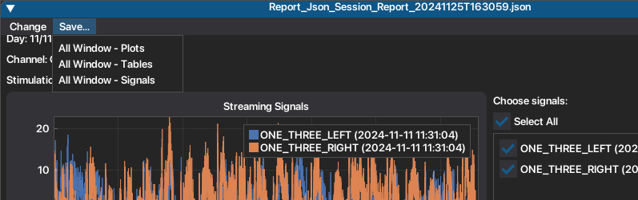
Plot manipulation is also facilitated. Right click on plot, or one of the axis, to see more tools to help you explore the plot. For example, double click on the plot will recenter your plot based on the available series.
Here you can find a scheme that represents the possible workflow in NeoDBS.
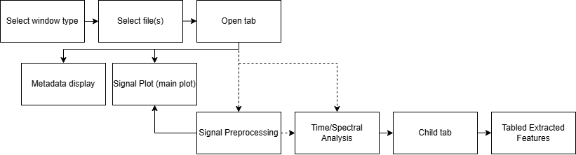